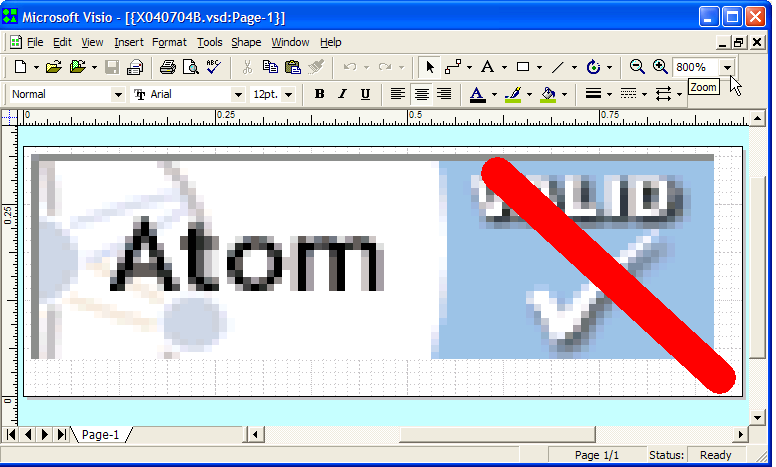
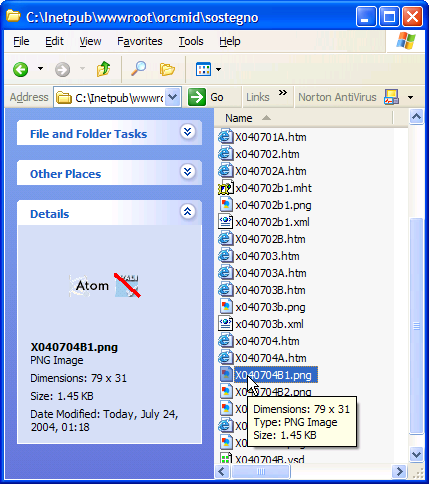

Incident Report X040704
Visio Image Rendering
invalidAtom Example
|
|
Incident Report X040704 |
In troubleshooting Blogger Atom Feeds, I ran into a situation where feeds didn't validate as I had expected. It seemed appropriate, in places where that breakdown was occuring, that I use an invalidAtom button, not a validAtom button. So I set out to create one.
The original validAtom button that I started with is a PNG file, validAtom.png obtained from the validation site. The version that I downloaded on 2004-07-23-17:29 renders as follows:
I found that Visio as the most-flexible product listed as able to open the PNG image on my computer system, so I did so.
Visio presented the image on a default large page. I shrank the page to enough to surround the image, and then enlarged it so that I could have fine control over the alteration process. I used this to produce the following image, in Visio's display:

Visio Rendering of VSD file on screen (not faithful to original saved diagram)[Note: The above image shows the diagonal red slash (for "not") displaced from its placement when the VSD was first created and the image saved. It appears that the validAtom image that we started with has been resized in some way.]
On performing a Save As ... for the VSD with the desired appearance, the resulting image is as follows:
although this version cannot be viewed in FrontPage 2000. It is viewable with the Windows XP image previewer, however:

This presentation confirms that there seems to be a reduction in size as well as clipping. I specified transparency when I save the image, and that may be part of the problem here. (The original image is 88 by 31 and it fills those dimensions.)
I am also able to view the image in Microsoft Photo Editor and resave it as a PNG. This is that result:

Shown next to the original for comparison.
| You are navigating Orcmid's Lair |
created 2004-07-24-11:06 -0700 (pdt) by orcmid |
{kind=link}
{kind=link}